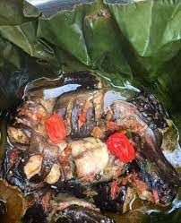

Kondrè avec la chèvre

Description
Le Ndomba de poisson est un met traditionnel du Cameroun qui se résume à un bouillon de poisson contenu dans des feuilles.
Ingredients
- 2 Kg poisson
- 2 sachets Secret Sauce
- 1 poireau (gros)
- 1 oignon
- 1 branche céléri
- 2 tomates (grosses)
- 3 branches basilic (ou masep)
- feuilles de djom
- feuilles de bananier
Etapes
- Découpez vos poissons en 2 ou 3 tranches selon leur taille, nettoyez et lavez ; puis trempez dans de l’eau salée.
- Coupez finement tous les condiments.
- Mélangez ces condiments avec 2 sachets d’épices Secret, salez et mettez un peu d’huile.
- Lavez les feuilles de bananier puis faites 4 paquets de ndomba.
- Laissez cuire à l’étouffé pendant 20 min
Notes
Accompagnement : Plantain vapeur, plantain pilé... etc.